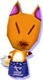

|
| |
| 『どうぶつの森＋』はNINTENDO64で人気を博した『どうぶつの森』のゲームキューブ版ですよね。 |
| |
| 江口 ええ。でも、むしろキューブ版で初めて『どうぶつの森』に触れるかたにぜひ遊んでいただきたいソフトなんですよ。 |
| |
| そもそも『どうぶつの森』を作ることになったきっかけはなんだったのでしょう。 |
| |
| 江口 たくさんの人が１つの場所に集まってきて、お互いに影響しあうようなフィールドをゲームの中で作りたかったんです。住人が集まってきて、話しあったり協力しあったりできる世界を作ろうと。 |
| |
| ゲームのジャンルが“コミュニケーション”になっていますよね。 |
| |
| 江口 それは最初からこだわった点なんですよ。こちらから仕掛けは作るけれど、あとはプレイヤーの人たちが自分でその仕掛けを見つけてくれたり、それを媒介にして話をしたりしてくれればいいなあと。 |
| |
| それで、どうぶつたちの住む村という設定が生まれたんですね。どうやって制作が進んだのですか。 |
| |
| 江口 まず、フィールドを１つの村にするという基本システムを作ったんです。次に、そのフィールドでどんな風にしたらコミュニケーションが成り立つかを考えました。プレイヤーが住む場所をまず作ったんですが、住人だけだと４人しか住めないので、コミュニケーションが成り立ちにくいですよね。そこで、人とどうやって関わっていけばいいのかという練習台として、どうぶつを案内人のような形で住ませたんですよ。その上で、自分が住んでいる村と、隣で遊んでいる人の村は全然別の村だという設定にしたんです。ですから、カセットによって村が違う。住民や地形には、ものすごくたくさんの組み合わせがあるんですよ。 |
| |
 野上 どうぶつたちもできるだけたくさんのバリエーションを作ろうということで、キャラクターデザインの池側さんに入ってもらいました。最初の目標は、クラスで５人くらいがこのソフトを持っていれば、同じどうぶつが一体も重ならないようにしようというものでした。 野上 どうぶつたちもできるだけたくさんのバリエーションを作ろうということで、キャラクターデザインの池側さんに入ってもらいました。最初の目標は、クラスで５人くらいがこのソフトを持っていれば、同じどうぶつが一体も重ならないようにしようというものでした。 |
| |
| 江口 プレイヤーがほかの人の村（＝ソフト）に遊びに行くという“お出かけ”のコンセプトは最初からありました。64ではコントローラーパックで行き来できる設定ですね。そのときに、「このどうぶつはウチにもいる」ということになると、世界がせまく見えますよね。よその村に行ったときに新鮮に感じられるようにしたかった。あとはどうぶつが引っ越して行くと「あいつ、あっちの村に引っ越していったけど元気にしてる？」という風に、ユーザー同士で近況報告や噂話ができるようにしたかったんです。 |
| |
| 部屋に置く家具もいろいろと選べますが。 |
| |
| 江口 部屋の中の家具は最初からたくさん作ろうと思っていました。目標は1000個だったんですよ。 |
| |
| 野上 担当スタッフは「そんなに作れるわけがない！」と言っていたんですが、終わってみたら1000個くらい作っていました（笑）。 |
| |
家具だけでなくて、洋服も着替えられたりします。細かいところが凝っていますね。
江口 あれはドット絵で描いてからどうぶつに着せてみて、一体一体似合うかどうかをチェックしているんですよ。キャラクターのデザインが変わって、似合わなくなったから却下された、という服もあるくらいなんですよ。 |
| |
| 村のバリエーションをあわせると、キャラクターもすごくたくさんいますもんね。作るうえで、池側さんが苦労したキャラクターはありますか。 |
| |
| 池側 やっぱりリセットさんなどの特殊なキャラクターは苦労しましたね。スクリプト（セリフ）担当のかたと打ち合わせをして、「こういうキャラクターはこの村にいないから作りましょう」とか、話をしながら作ったものもあります。 |
| |
| 普通のゲームと同じように、キャラクター設定を作ってから、セリフや絵を考えていったんですか。 |
| |
江口 設定というほどではないですが、「この状況にはこの性格のキャラクターが欲しい」という簡単な性格づけがあって、それから絵とスクリプトを同時に作っていきました。
野上 例えばリセットさんだったら怒るために出てくるキャラクターですから、あまりかわいらしいといけないですよね？ 店員だったら愛想がいいとか。あとは、キツネだったらうさんくさい感じとか、動物のイメージから性格を作っていったキャラクターもあります。 |
| |
| 村の住人たちは、ほとんどが実在する動物ですよね。なぜですか？ |
| |
江口 例えば「うちの村にはネコが多いんだよ」「うちは全然リスがいないよ」という言いかたは簡単ですけど、「ほら、あそこにツノが生えていて背中にトゲがあるヤツがさ」とかいうと、噂話も話しづらいですよね（笑）。
池側 あまり突飛なものにすると、親近感がわかないと思うんですよ。だから、なるべく身近な動物を使うようにしたんです。。 |
| |
どうぶつのセリフにもいろいろありますよね。
江口 季節や時間帯によってぞれぞれ違う話題を話すようにしています。全部で１万以上の会話をするようになっているんです。
１万！ それはスゴいです。
江口 だから、セリフはキャンセルしたりスキップしたりできないんです。 |
| |
| 野上 現実の生活で、「あ、いまのセリフはキャンセル」とは言えないですよね。 |
| |
| 江口 全体的に、村の生活にも現実感を出したかったんですね。ですから、村に行ってゴミを散らかすと、次にプレイした家族に「散らかさないで」と言われたりとか。そういうコミュニケーションを期待しているんです。 |
| |
| 村に行っても、普段と同じような生活をしてしまいそうです。 |
| |
野上 そうですね。より、その人の人間性が出るんですよ。
池側 人の村に行くと、その人の性格がわかるんですよ。会社の後輩の男の子の村へ行くと、すごくキレイに整とんされていたとか。逆に自分は女なのに散らかっていたりするんです（笑）。 |